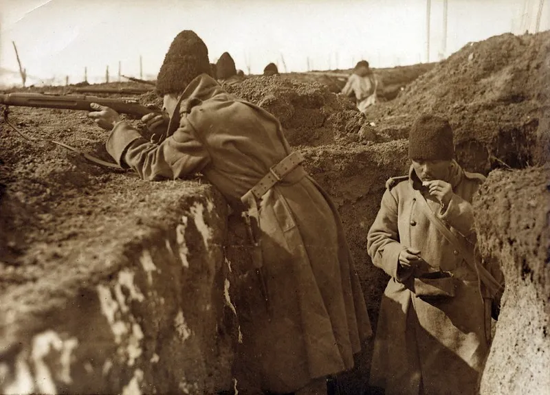
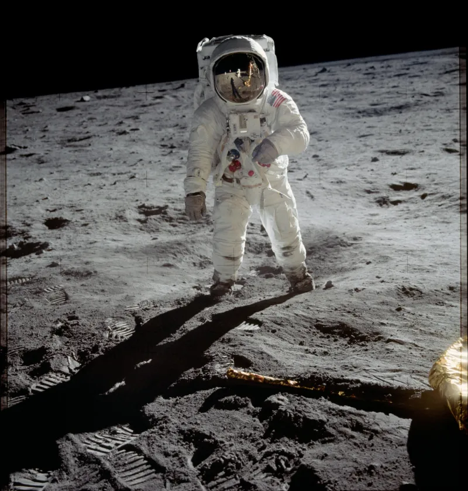

1914–1918Primera Guerra Mundial
El primer conflicto global; introdujo la guerra industrial y transformó el equilibrio político de Europa.
El siglo XX fue un período de transformación sin precedentes, marcado por avances tecnológicos, conflictos globales y profundos cambios sociales y políticos: desde el estallido de las dos guerras mundiales hasta el auge de la Guerra Fría y la globalización. Estuvo definido por la innovación, la destrucción y la búsqueda constante de nuevos modelos de sociedad.
Seis momentos que transformaron la política, la sociedad y la relación entre los países.

1914–1918El primer conflicto global; introdujo la guerra industrial y transformó el equilibrio político de Europa.
 1929
1929
El colapso de la bolsa de Nueva York desató una crisis económica mundial durante los años treinta.
 1939–1945
1939–1945
El conflicto más devastador de la historia; aceleró avances como el radar, la aviación y la producción de penicilina.
 1949
1949
Los Convenios de Ginebra fijaron reglas para proteger a civiles, heridos y prisioneros durante los conflictos armados.

20 JUL. 1969La misión Apolo 11 llevó a los primeros seres humanos a la superficie lunar y marcó un hito científico.
El comercio, el transporte y la información conectaron al mundo como nunca; Internet aceleró este proceso.
Toca una tarjeta para ver por qué fue importante.
Hermanos Wright. Revolucionó el transporte: viajar entre continentes pasó de semanas a horas. Su primer vuelo motorizado controlado duró unos 12 segundos.
Alexander Fleming. Su descubrimiento abrió el camino a los antibióticos modernos. Muchas infecciones bacterianas dejaron de ser mortales y los tratamientos médicos se volvieron más seguros.
John Bardeen, Walter Brattain y William Shockley. Más pequeño y eficiente que las válvulas electrónicas, permitió crear dispositivos compactos y es una pieza fundamental de los chips actuales.
James Watson y Francis Crick, con aportes esenciales de Rosalind Franklin y Maurice Wilkins. El modelo de doble hélice ayudó a explicar cómo se transmite la información genética e impulsó la biología molecular y la biotecnología.
ARPANET, proyecto impulsado por el Departamento de Defensa de EE. UU. Conectó computadoras para compartir información. La World Wide Web, creada por Tim Berners-Lee, llegó entre 1989 y 1991.
Desarrollo colectivo de miles de científicos e ingenieros. Desde el Sputnik hasta el Apolo 11, la tecnología espacial abrió posibilidades para las comunicaciones satelitales, el GPS, el pronóstico del clima y la observación de la Tierra.